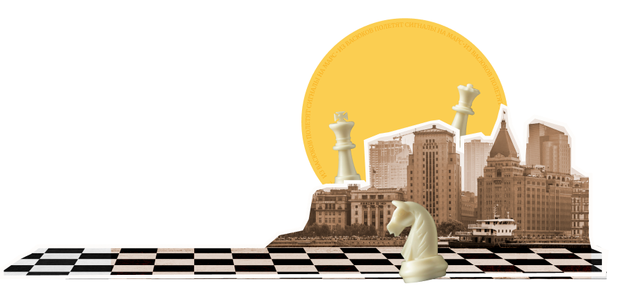
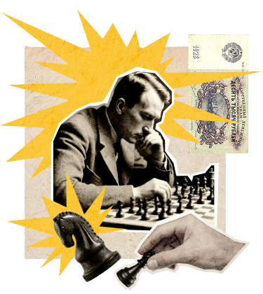
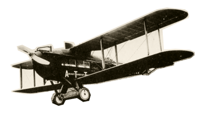

Превратите уездный город в столицу земного шара
Оплатите взнос на телеграммы для организации Международного васюкинского турнира по шахматам
Оплатите взнос на телеграммы для организации Международного васюкинского турнира по шахматам




Строительство железнодорожной магистрали Москва-Васюки
Открытие фешенебельной гостиницы «Проходная пешка» и других небоскрёбов
Поднятие сельского хозяйства в радиусе
на тысячу километров: производство овощей, фруктов, икры, шоколадных конфет
Строительство дворца
для турнира
Размещение гаражей
для гостевого
автотранспорта
Постройка сверхмощной радиостанции для передачи всему миру сенсационных результатов
Создание аэропорта «Большие Васюки»
с регулярным отправлением почтовых самолётов и дирижаблей во все концы света, включая Лос-Анжелос и Мельбурн
